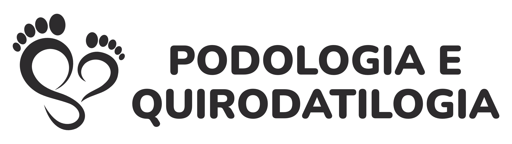

Saúde e Bem-Estar para Seus Pés e Mãos!
A Podologia e Quirodatilogia tem como objetivo, tratar e prevenir patologias dos pés e mãos, proporcionando assim, conforto e bem estar para seu dia a dia.
Há mais de 10 anos, nossa clínica tem acompanhado de perto cada paciente, oferecendo cuidado e atenção para que você possa caminhar sem dor e viver com mais qualidade de vida.
Agende sua consulta